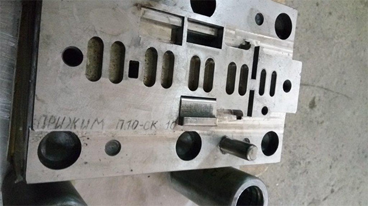

Изготовление штамповой оснастки
Компания «Техноресурс» осуществляет изготовление штампов и пресс-форм по чертежам заказчика на современном оборудовании.
Качество наших изделий во многом зависит от правильно изготовленной штамповой оснастки – доверьте свой выбор профессионалам ООО «Техноресурс», заказывайте формы и вырубные штампы на нашем производстве.
Штамповая оснастка разрабатывается профессионалами с большим опытом работы. Мы учитываем пожелания наших клиентов и знаем все тонкости технологического процесса при изготовлении штампов и пресс-форм.
Изготовление вырубных и гибочных штампов по металлу из высококачественных материалов, на полуавтоматизированном и автоматизированном оборудовании – позволяет исключать брак и делать работу качественно и оперативно. Техноресурс проектирует и изготавливает сложные вырубные штампы (штанцформ, вырубной остнастки, высекальной оснастки, высекальных штампов).

Изготовление штамповой оснастки
Мы выстроили точный контроль качества на всех этапах изготовления вырубных штампов – это гарантирует вам надежность и долговечность использования оснастки.
В производстве изготовления пресс-форм для литья нами используем только высокоточное, производительное фрезерное, электроэрозионное оборудование – что благоприятно сказывается на результатах нашей работы.
На все изготовленные пресс-формы даются гарантийные обязательства сроком, оговоренным документально. Также наша компания осуществляет постгарантийную поддержку работоспособности пресс-форм и штампов.